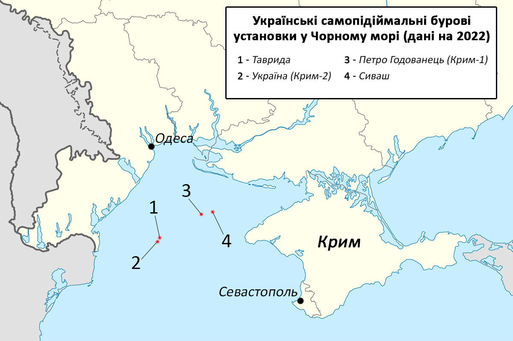

Платформи
«Вишки Бойка» — бурові газовидобувні платформи В312 — «Петро Годованець» (побудована у 2010) та В319 — «Україна» (побудована у 2012) біля берегів Криму в Чорному морі. У березні 2014 року були захоплені Росією. Закупівля плавучих вишок для видобутку газу спричинила суспільний резонанс через можливе порушення законів України та привласнення державних коштів у особливо великих розмірах колишнім міністром енергетики України, проросійським політиком Юрієм Бойком. Було відкрито кримінальне провадження. Вишки повернено під контроль України в вересні 2023 року.
Завдяки цим СПБУ, країна до 2015 року планувала наростити газовидобуток до 3 млрд кубометрів із минулорічних 1,056 млрд. Отриманий за допомогою СПБУ газ, направлявся на потреби Криму. Мільярд кубометрів, який видобували в морі останніми роками, використовували саме так. Після викачування з надр він надходив в мережу підводних газогонів. Далі газ розподілявся в АР Крим через газопровід Джанкой — Феодосія — Керч.
Технічний під параграф у першому блоці для перевірки жовто-зеленого кольору.
Власником СПБУ «Петро Годованець» і «Україна» було українське державне акціонерне товариство «Чорноморнафтогаз». Його 100 % акцій належать НАК «Нафтогаз України». Після анексії Криму 2014 року, Росія "націоналізувала", тобто незаконно привласнила все майно «Чорноморнафтогазу», зокрема і згадані бурові платформи. Окупантами також були захоплені українські самопідіймальні бурові установки «Таврида» і «Сиваш».
Я жовтий параграф на тому ж рівні вкладеності і я маю бути жовто-зелений.
Я жовтий параграф на тому ж рівні вкладеності і я маю бути жовто-зелений.
Я жовтий параграф на тому ж рівні вкладеності і я маю бути жовто-зелений.
Закупівля
2011 року, під час роботи Юрія Бойка в Міністерстві енергетики України підконтрольний міністерству «Чорноморнафтогаз» придбав бурову платформу сінгапурського виробництва не безпосередньо у заводу-виробника Keppel, а через посередника — британську компанію Highway Investments Processing, витративши на це $400 млн, дорожче ніж у виробника. Другу платформу також було куплено через посередника. ЗМІ запідозрили корупцію в цих угодах, сам інцидент згадувався у ЗМІ як «вишки Бойка».
Кримінальне провадження
18 червня 2014 року Генпрокуратура України розпочала досудове розслідування за фактом заволодіння невстановленими особами, що діяли від імені посадових осіб ДАТ «Чорноморнафтогаз», державними коштами на $400 млн під видом закупівлі вишок для видобутку нафти та газу на Чорноморському шельфі. Правопорушення було кваліфіковано за ч.5 ст.191 (заволодіння майном шляхом зловживання службовим становищем в особливо великих розмірах чи організованою групою) ККУ.
У березні та жовтні 2011 року при закупівлі плавучих бурових установок, що самопідіймаються, було допущено грубі порушення тендерних процедур, внаслідок чого було незаконно витрачено державні кошти в особливо великих розмірах. 2015 року Бойко проходив у справі як свідок. 19 липня 2015 року стало відомо, що МВС порушило ще одну кримінальну справу щодо розкрадання грошей на $60 млн при закупівлі у березні 2011 року «Чорноморнафтогазом» буксирів для транспортування бурових вишок для видобутку нафти та газу на шельфі Чорного моря.
Платформи під час війни
У березні 2014 року самопідіймальні бурові установки «Петро Годованець» та «Україна» були захоплені військами РФ та перебазовані із зони Одеського газового родовища ближче до тимчасово окупованого Криму. Пізніше Печерський суд Києва наклав арешт на ці установки. 15 вересня 2016 року ГПУ офіційно заявила, що «слідством не встановлено фактів підписання від імені Бойка документів щодо проведення закупівель» цих вишок.
20 червня 2022 року, під час широкомасштабного російського вторгнення в Україну, Збройні сили України завдали ракетного удару по «вишках Бойка».
У серпні 2023 року поблизу платформ відбулося бойове зіткнення між українськими військовими на чотирьох катерах та російським винищувачем Су-30. Інцидент був знятий з певної відстані з українського БПЛА. Російський літак невдало намагався уразити українські катери з гарматного та ракетного озброєння, та ці спроби були припинені пострілом ПЗРК, внаслідок якого літак зазнав ушкодження.
11 вересня 2023 року «вишки Бойка», а також СПБУ «Таврида» та СПБУ «Сиваш», повернені під контроль України.